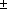

Release 3.3 Copyright ©1995 by NeXT Computer, Inc. All Rights Reserved.
|
Changes made for the current release of NeXTstep affect the information presented in this chapter. For details see:
 /NextLibrary/Documentation/NextDev/ReleaseNotes/WindowServer.rtf /NextLibrary/Documentation/NextDev/ReleaseNotes/WindowServer.rtf
/NextLibrary/Documentation/NextDev/ReleaseNotes/AppKit.rtf
All of your program's visual output, whether sent to the laser printer or displayed on the screen, is generated through the PostScript language, a high-level, interpreted language with special facilities for drawing and handling graphic images, including text. The PostScript language has typically been used to produce high-quality images on the printed page. On the NeXT computer, it's also used for imaging on the screen. NeXT and Adobe Systems Incorporated have jointly developed the Display PostScript system, which refines the language and adapts it to the interactive requirements of the screen.
Because the NeXT computer creates both screen and printed images through the same language, the screen can display a document just as it will be printed. Except for differences in resolution, what you see is what you get.
Applications draw within windows--screen rectangles that can be moved, resized, and layered on top of each other--rather than directly on the screen. The NeXT window system is implemented as an extension to the Display PostScript system. At the most fundamental level, applications create and manage windows through PostScript operators. However, the Application Kit provides an object-oriented interface to the window system that most applications should use; the Kit handles basic window-management tasks for you.
NeXT has made other extensions to the Display PostScript system so that applications can better use the capabilities of the window system and MegaPixel Display. The principal additions permit compositing, drawing with partially transparent paint, and instance drawing: |
|
 |
Compositing builds a new image by overlaying images that were previously drawn. It's analogous to a photographer printing a picture from two negatives, one placed on top of the other. However, on the NeXT computer there are even more ways that each of the images you start with can contribute to the composite. |
|
|
|
All image-transferring operations, including simply copying an image from one location to another, are accomplished through compositing. Compositing is the only way to copy on the NeXT computer. |
|
|
|
Compositing can achieve interesting effects when the initial images are drawn with partially transparent paint. In a typical compositing operation, paint that's partially transparent won't completely cover the image it's placed on top of; some of the other image will show through. The more transparent the paint is, the more of the other image you'll see. |
|
|
|
You can set the coverage of the paint you draw with--how transparent or opaque it is--just as you set its color or gray level. |
|
|
|
Instance drawing puts temporary images on the screen, and removes them again, at little processing cost. When instance drawing is removed, the original images are automatically restored. Instance drawing is useful for temporarily highlighting an image, for showing an object being dragged from one location to another, and for other kinds of dynamic drawing. |
|
All operators added to the Display PostScript system by NeXT are described in detail in the NeXTstep Reference, Volume 2. The Display PostScript system is documented in four publications by Adobe Systems Incorporated--PostScript Language Extensions for the Display PostScript System, Client Library Reference Manual, pswrap Reference Manual, and Perspective for Software Developers. The PostScript language itself is described in the PostScript Language Reference Manual by Adobe Systems Incorporated, published by Addison-Wesley. A beginning guide to the language and a series of example graphics programs are provided in the PostScript Language Tutorial and Cookbook, by the same author and publisher.
This chapter discusses drawing on the NeXT computer using the Display PostScript system and its extensions. In addition to transparency, compositing, and instance drawing, it describes how drawing works in the NeXT window system and on the MegaPixel Display.
Later chapters--Chapters 6, "Program Structure," 7, "Program Dynamics," and 9, "User-Interface Objects"--discuss drawing in the broader context of the Application Kit. The Kit defines objects that draw the graphic elements of the NeXT user interface, including scrollers, switches, sliders, menus, and user-editable text; you don't need to write this PostScript code yourself. You can therefore focus your attention on drawing that's unique to your application. The drawing code you write will be integrated into the object-oriented program structure provided by the Kit, and will use the Display PostScript system and the extensions to it discussed in this chapter. |
|
When one imaging model is used for the printer and another for the screen, application programs must pursue two parallel lines of development. In addition to the extra work, it's nearly impossible to make screen and printed images match.
The NeXT computer avoids these problems by using a single imaging model, the PostScript language, for all drawing. The PostScript language is well-suited to this role because: |
|
|
It's device independent. |
|
|
It's programmable. |
|
|
It provides a complete two-dimensional imaging model. |
|
|
It's a widely used standard on printers. |
|
Extensions to the PostScript language are the foundation for the NeXT window system. Drawing instructions and window management operations are both sent to the same interpreter. Because of this integration, you'll have fewer issues to worry about as you program your application.
Drawing on the screen has dynamic aspects that are missing when drawing for the printer: |
|
|
It's interactive. Applications must follow the user's instructions and respond graphically to the user's actions. |
|
|
|
It changes over time. Applications can repeatedly reuse the same area of a window by erasing and replacing what's displayed there. |
|
|
|
It uses a number of different windows simultaneously. Instead of drawing one page at a time, applications present the user with a multi-windowed interface. |
|
These aspects present applications with both challenges and opportunities. One challenge is speed. To meet it, the Display PostScript system has been refined to respond quickly, without losing any of the original generality and power of the PostScript language. In a few cases, operators have been added so that common operations can be executed more efficiently.
Another challenge is programming simplicity. This challenge is met mainly by relieving applications of bothersome chores: |
|
|
Much of your program's drawing can be done through Application Kit objects that have the ability to draw themselves. Common drawing operations such as scrolling, resizing, clipping, and erasing are also handled through Application Kit objects. In addition, the Kit has facilities that make it relatively easy to use bitmaps and icons. |
|
|
|
The Window Server handles the dynamic behavior of windows. It moves and resizes them in response to user actions, without your program's intervention. |
|
|
|
The Window Server provides windows with backup buffers so that it can automatically save images when a window is hidden, and automatically restore them again when the window becomes visible once more. |
|
Buffering also makes it possible to draw into windows that never appear on-screen. The images that are cached in off-screen windows can then be copied to windows on-screen, using the same operators that transfer images between on-screen windows.
NeXT has adopted an advanced model for moving and combining images. Compositing and transparency make it possible for programs to explore new visual effects, such as slowly dissolving one image into another and building a final image out of several layers. With window buffering, they make animation fairly simple. NeXT compositing is fully compatible with color graphics, so you won't have to redesign your program for a color screen. Compositing is implemented as an extension to the PostScript language, but it's also possible to composite in Objective-C code using the Bitmap object of the Application Kit.
To help applications provide immediate feedback to users, NeXT has also augmented the PostScript language with instance drawing. Images that are drawn in this mode are temporary; when they're removed, the original image reappears. |
|
The first part of this section briefly covers some background terminology. The parts that follow introduce drawing on the NeXT MegaPixel Display.
Pixels, Halftones, and Rectangular Coordinates
Images on the screen are formed from tiny picture elements, or pixels, arranged in a rectangular grid of columns and rows that fill the entire surface of the screen. Because of their positions in the grid, pixels can be thought of as little square dots. Each pixel has a separate representation in screen memory and can be assigned an independent color value. Varying the color of the individual pixels makes it possible to render an almost unlimited variety of images on the screen.
Typically, a pixel on a monochrome computer screen is capable of showing just two colors: either black or white. A black line is rendered by turning all the pixels along its path black; a white circle has all the pixels within its radius turned white. Intermediate shades of gray are rendered by halftoning, turning some pixels black and others white. A mixed pattern of adjacent black and white pixels appears as a solid, uniformly colored gray area. Figure 4-1 is a close-up diagram of a halftone gray area. The lines represent the pixel grid; the spaces between the lines represent individual pixels. |
|
Figure 4-1. Halftone with Black and White Pixels
Locations on the screen are described using a standard rectangular (Cartesian) coordinate system. Points are identified by their position relative to a horizontal x-axis and a vertical y-axis. The origin, where the two axes meet, is (0, 0). A point 500 pixels to the right of the origin as measured along the x-axis and 200 pixels above the origin as measured along the y-axis is (500, 200). Negative coordinates locate points below the x-axis and to the left of the y-axis.
The resolution of an image is a function of pixel density. The more pixels there are in a given area (that is, the smaller they are), the more detailed and precise the image can be. Computer screens have a lower resolution (fewer pixels per inch) than do laser printers.
The NeXT Computer Screen
The visible area on the MegaPixel Display screen holds nearly a million pixels, 1120 along each horizontal row and 832 in each vertical column. There are about 92 pixels per inch in each direction (91.80 per inch along the x-axis and 92.44 along the y-axis when the display is exactly 12.2 inches by 9 inches, but these dimensions may vary by 0.100 inch).
Pixels on the NeXT monochrome screen aren't limited to just black and white; each one can also display two shades of gray, for a total of four discrete colors: |
|
white
light gray
dark gray
black |
|
This reduces the need for halftoning while increasing the number of halftone shades. Where halftones are used, there's less variation in the color of adjacent pixels, so the screen can show purer, less granular shades of gray. Transitions from one shade of gray to another in continuous-tone images are smoother. Contrasts between a shade of gray and either black or white are sharper, since the gray can be rendered with fewer, if any, black or white pixels.
Figure 4-2 shows the same shade of halftone gray as Figure 4-1, only rendered with light gray rather than black pixels. Note that Figure 4-2 has three times as many nonwhite pixels, all closer to the desired shade of gray than the black pixels in Figure 4-1. |
|
Figure 4-2. Halftone with Gray and White Pixels
Each pixel requires two bits of memory to distinguish the four colors. When needed, two additional bits are set aside to store the coverage of the pixel--how transparent or opaque it is. (See "Compositing and Transparency," later in this chapter.) Halftoning produces intermediate "shades" of coverage, just as it produces intermediate shades of gray.
To avoid halftoning on the MegaPixel Display, you can set the gray level to a value that results in pure black, pure white, or a pure gray. These four C constants are defined to the required values: |
|
NX_WHITE
NX_LTGRAY
NX_DKGRAY
NX_BLACK |
|
In the PostScript language, values specified to three decimal places work: |
|
white |
1.0 |
|
light gray |
0.667 |
|
dark gray |
0.333 |
|
black |
0.0 |
|
Screen Coordinates
The entire screen can be thought of as the first (upper right) quadrant of a two-dimensional coordinate grid, with the origin in the lower left corner and the positive x-axis extending horizontally to the right and the positive y-axis extending vertically upward. A unit along either axis is equal to the distance across one pixel, approximately 1/92 inch.
Figure 4-3 illustrates this screen coordinate system. |
|
Figure 4-3. The Screen Coordinate System
Coordinates are specified as floating-point numbers. This permits you to move anywhere on the screen, not just from pixel to pixel. Coordinates that are integers--those that have no fractional part--lie between pixels in the screen coordinate system; fractional coordinates locate points somewhere within a pixel. Figure 4-4 indicates where four sample points are located in relation to pixel boundaries. |
|
Figure 4-4. Points and Pixels
"Imaging Conventions" below explains how fractional coordinates and lines that cut through pixels are handled on-screen.
The screen coordinate system has just one function: to position windows on the screen. When your application creates a new window, it must specify the window's initial size and location in screen coordinates. For drawing in a window, it will use a different coordinate system, one that's specific to the window (see "Window Coordinates" below).
No matter where a window is located, its edges are always aligned on pixel boundaries. If you try to position a window using fractional coordinates, they will be adjusted to whole integers. Fractional coordinates can be freely used when drawing within a window, however.
As Figure 4-3 above illustrates, the screen coordinate system extends beyond the screen in all directions. However, its range is not unlimited. No screen coordinate (no point within a window) can have a value greater than 16000 or less than  16000: 16000: |
|
(16000  x x  16000, 16000 y 16000) 16000, 16000 y 16000) |
|
All windows must fit within the space bounded by 16000.
Window Coordinates
The reference coordinate system for a window is known as the base coordinate system. It differs from the screen coordinate system in only two ways: |
|
|
It applies only to a particular window; each window has its own base coordinate system. |
|
|
|
Its origin is at the lower left corner of the window, rather than the lower left corner of the screen. If the window moves, the origin and the entire coordinate system move with it. An image retains its position within a window's coordinate system no matter where the window is located. |
|
In PostScript language terms, the base coordinate system is the equivalent to a "default user space" for the window. It provides a starting place for programs that draw within a window, just as the default user space provides a starting place for programs that describe pages for a printer.
Note: You can also establish a reference coordinate system with the same coordinate units as the default user space, 1/72 inch. However, this documentation assumes the base coordinate system for all windows. The base coordinate system is more convenient for drawing on the screen, since coordinate units fall on pixel boundaries. It's also the initial coordinate system established for all windows created through the Application Kit. (For more information, see the discussion of the windowdeviceround and windowdevice operators in the NeXTstep Reference manual.)
Modifying the Coordinate System
You're not limited to the base coordinate system when you draw within a window. PostScript operators can radically transform the window's coordinates. The origin can be moved (by the translate operator), the x- and y-axes can be turned to point in any direction (by the rotate operator), and the size of a unit along either the x- or y-axis can be expanded or shrunk (by the scale operator). The base coordinate system is simply the reference system for any subsequent transformations by PostScript operators.
PostScript transformations apply only within a window. They don't alter the screen coordinate system, and therefore can't affect the size or location of the window itself.
When you draw, coordinates are expressed in the application's current coordinate system, the system reflecting the last coordinate transformations to have taken place within the current window. The PostScript interpreter keeps track of this system through the current transformation matrix (CTM) of the current graphics state.
View Coordinates
Drawing is usually limited to areas that are smaller than the whole window. The Application Kit permits you to set up rectangular regions within a window and to move and resize them, much as windows themselves are moved and resized on the screen. The Kit provides each region--or "View," after the Objective-C class that defines them--with a coordinate system, which it makes the application's current coordinate system before you draw. This coordinate system is a transformation of the base coordinate system and has a more convenient origin, at the lower left corner of the area you're drawing in. Figure 4-5 illustrates the relationship between the base coordinate system and the default coordinate system provided for a View. |
|
Figure 4-5. Window and View Coordinates
You can use Application Kit methods or PostScript operators, or both, to further modify these default coordinates. See Chapters 6 and 7 for more on Views.
Borders and Content Areas
The initial size of a window is determined by parameters that specify its width (along the x-axis) and its height (along the y-axis) in the screen coordinate system. These two parameters define the window's initial content area, the area that's available for drawing. The window's initial location is set by parameters that specify the lower left corner of the content area.
Windows typically have a title bar above the content area and a border around both the content area and title bar. Often they also have a resize bar below the content area and inside the border. (Some windows may have a border but lack a title bar and resize bar; some lack even the border.)
The window border, title bar, and resize bar lie outside the requested window area. If you ask the Application Kit to create a titled window 100 pixels wide and 100 pixels high, the window border and title bar will surround the 100-by-100 square you asked for. The point where you locate the window will correspond to the lower left corner of the square, inside the border. The border, title bar, and content area all lie inside the window, and share the window's coordinate system.
Figure 4-6 is a close-up view of the corner of a titled window created at (50.0, 300.0) in the screen coordinate system. The window border is just one pixel wide. The point where the window was located becomes the origin of the initial drawing coordinates within the content area (the coordinate origin for a View that fills the content area). The origin of the base coordinate system lies at the lower left corner of the window itself, outside the border. |
|
Figure 4-6. Window Corner
Printing Coordinates
When a screen image is printed by the NeXT 400 dpi Laser Printer, or by any other PostScript printer, one unit within the base or screen coordinate system (that is, one pixel) translates to 1/72 inch, equal to about one typographical point. Since a screen pixel is smaller, approximately 1/92 inch, the screen shows images at just over three-fourths their printed size. This reduction permits a full 8 1/2-by-11-inch page to be shown on the screen from top to bottom, without scaling the window's coordinate system.
This doesn't mean that an image must always be shown on the screen at three-fourths its printed size. It's possible, for example, to use the PostScript scale operator to "magnify" the image on the screen, then print the image without the scaled magnification. The screen version could actually be larger than the unmagnified printed version.
Laser printers produce images with many more pixels per inch than do screen displays. The NeXT laser printer prints either 300 or 400 pixels per inch, depending on the setting. Printed images, therefore, have a higher resolution and are portrayed in more detail than screen images.
For example, a vertical line with a specified width of one unit within the base coordinate system can be shown on the screen as a thin rectangle just one pixel wide. When the line is printed, it will look almost 28% larger and have a width of at least four printer pixels. Setting the width of this line to less than 1--to 0.25, for example--will have no effect on the dimensions of the line on-screen, but will make the line thinner when it's printed.
Rectangles
It's often necessary to limit a PostScript operation, or drawing in general, to a particular area of the screen. These areas are most often specified as rectangles: |
|
|
A window is a rectangle in the screen coordinate system. |
|
|
|
Several PostScript operators, such as the compositing operators discussed under "Compositing and Transparency" below, act on rectangles within windows. |
|
|
|
The Application Kit uses rectangles extensively to designate particular areas--called "Views"--where drawing can occur inside windows (see Chapter 6 for details). |
|
On the NeXT computer, a rectangle is a combination of a point and an extent. The point locates the rectangle by assigning it x and y values within a coordinate system. The extent specifies the size of the rectangle--its width as measured in a direction parallel to the x-axis and its height as measured in a direction parallel to the y-axis. The width and height are measured from the point that locates the rectangle.
This way of specifying a rectangle has one consequence of note: A rectangle is aligned with its coordinate system; the sides of the rectangle are parallel to the coordinate axes. Figure 4-7 illustrates a rectangle with the orientation of the base or screen coordinate system. |
|
Figure 4-7. Rectangle
PostScript operators take four parameters to specify a rectangle. An example is rectfill, which fills a rectangle with the current color: |
|
x y width height rectfill |
|
In the Application Kit, rectangles are specified as C structures of type NXRect. The NeXT header file event.h (in the dpsclient subdirectory of /usr/include) defines the elements that make up an NXRect structure: |
|
|
Since all coordinate values must be specified by floating-point numbers, it defines NXCoord as a float: |
typedef float NXCoord;
|
|
A pair of NXCoord variables--one for the x coordinate and one for the y coordinate--designate a point: |
typedef struct _NXPoint {
NXCoord x;
NXCoord y;
} NXPoint;
|
|
A pair of NXCoord variables also designate the size of a rectangle: |
typedef struct _NXSize {
NXCoord width;
NXCoord height;
} NXSize;
|
The NeXT header file graphics.h (in the appkit subdirectory) combines NXPoint and NXSize structures to define the rectangle itself: |
typedef struct _NXRect {
NXPoint origin;
NXSize size;
} NXRect;
|
The values in an NXSize structure should never be negative; for the Application Kit, the width and height of a rectangle must be positive (or 0.0). This means that the point that locates a rectangle (origin) will have the smallest coordinate values of any point in the rectangle. The extent of a rectangle is measured in positive directions from its origin.
Rectangle Geometry
From a pair of rectangles within the same coordinate system, it's possible to calculate a third rectangle, their union, the smallest rectangle that completely encloses them both.
It's often also possible to calculate a fourth rectangle, their intersection. Two rectangles are said to intersect if they have any area in common. Since rectangles within the same coordinate system have parallel sides, this area will also be a rectangle.
Rectangular union and intersection are illustrated in Figure 4-8. |
|
Figure 4-8. Union and Intersection of Rectangles
When passed pointers to two NXRect structures, NXIntersectRect() returns YES if the two rectangles intersect and NO if they don't. |
BOOL overlap;
overlap = NXIntersectRect(&rect1, &rect2);
|
If the two rectangles intersect, you can use NXIntersectionRect() to calculate the area that overlaps. It will place the intersection in the structure specified by its second argument and return a pointer to the same structure. |
NXRect *smallrect;
smallrect = NXIntersectionRect(&rect1, &rect2);
|
If the two rectangles don't overlap, NXIntersectionRect() returns a NULL pointer and doesn't modify either of the rectangles it's passed.
NXUnionRect() is similar to NXIntersectionRect(). It places the union of the two rectangles in the structure specified by its second argument and returns a pointer to the structure. |
NXRect *bigrect;
bigrect = NXUnionRect(&rect1, &rect2);
|
NXUnionRect() and NXIntersectionRect() perform two of the most common calculations on rectangles. But there are also a number of other functions that modify NXRect structures in prescribed ways: |
|
|
NXSetRect() initializes an NXRect structure. |
|
|
|
NXIntegralRect() alters a given rectangle so that it has no fractional coordinates. If the coordinate system hasn't been scaled or rotated, it guarantees that the sides of the rectangle will lie on pixel boundaries. |
|
|
|
NXDivideRect() slices a rectangle in two. You can specify the size of the slice and the side from which it should be taken. |
|
|
|
NXInsetRect() calculates a rectangle that's inset from the one given. |
|
|
|
NXOffsetRect() moves a rectangle by specified offsets along the x- and y-axes. |
|
Another function, NXPointInRect(), is used to determine whether a particular point (such as the location of the cursor) lies within a particular rectangle. |
BOOL inside;
inside = NXPointInRect(&point, &rect);
|
It returns YES if the point touches the rectangle, and NO if it doesn't.
All these functions are defined in the Application Kit. They're described in more detail in the NeXTstep Reference manuals.
When a Rectangle Isn't Rectangular
The sides of a rectangle are always parallel to the x- and y-axes of its coordinate system. Since the coordinate axes are typically perpendicular to each other, the corners of a rectangle are, as expected, 90° angles.
It's possible, however, to modify the PostScript coordinate system so that the axes intersect at an angle other than 90°. A rectangle specified within such a coordinate system won't appear to be a rectangle at all. It will have the shape of a nonrectangular parallelogram; since its sides are parallel to the coordinate axes, they won't meet to form 90° corners. This is illustrated in Figure 4-9. |
|
Figure 4-9. Nonrectangular Rectangle
The most straightforward way to produce a skewed coordinate system is with the following sequence of two PostScript transformations: |
|
1. |
Scale the coordinate system unequally. |
|
2. |
Rotate the coordinate axes into the scaled coordinates. |
|
For example, Figure 4-9 above shows the approximate result of this PostScript code: |
2.0 1.0 scale
30.0 rotate
40.0 40.0 100.0 100.0 rectfill
|
Here the rectfill operator produces a rectangle at (40.0, 40.0) with a width and height both equal to 100.0. In an unscaled, unrotated coordinate system, it would appear as an upright square.
Before the coordinate transformations in this example, the x-axis was horizontal and the y-axis was vertical; units along both axes had the same length. The scale operator stretched the length of a horizontal unit (measured along the x-axis) to twice the length of a vertical unit (measured along the y-axis). The rotate operator then altered the position of the x- and y-axes, but not the horizontal and vertical orientation of the scaling. Like anything else located in this scaled coordinate system, the x- and y-axes are stretched in a horizontal direction, and are thus pulled away from the perpendicular. Figure 4-10 illustrates what happened to the x-axis in the previous figure when it was rotated 30 in the scaled coordinate system. |
|
Figure 4-10. Rotated x-Axis in Scaled Coordinates
Although skewed coordinates turn rectangles into parallelograms, NeXT documentation refers to any area specified by a point and an extent as a "rectangle," no matter what shape it has. When viewed from within a skewed coordinate system, a nonrectangular rectangle still has 90° angles; it's nonrectangular only when viewed from the outside. |
|
The NeXT window system is grounded in extensions to the Display PostScript system. The extensions create windows, move and resize them, order them from front to back, direct drawing to them, associate events with them, remove them from the screen, and carry out other low-level window management tasks.
The Application Kit builds on these operators and provides an object-oriented programming interface to them. An application should create the windows it needs through the Kit. The Kit defines Window objects to manage windows, link them to an event-handling mechanism, and oversee the drawing that's done in them. Creating a Window object through the Kit produces a window to draw in and provides a structure that integrates the window into the application. The methods for creating and managing windows are discussed under "Managing Windows" in Chapter 6.
Window Numbers
Applications typically use a number of different Window objects and keep track of them through their object ids. The Window Server keeps track of windows by assigning each one a unique window number as an identifier. The window number is an int guaranteed to be greater than 0.
No two windows, even if they belong to different applications, will be assigned the same window number. However, when a window is destroyed, the Window Server may reuse its number.
Contexts and Graphics States
The Window Server can serve a large number of client applications; its PostScript interpreter interprets PostScript code concurrently for all running applications.
For each connection that it has to an application, the Window Server maintains an independent PostScript execution context. Figure 4-11 illustrates the context that each application sees. |
|
Figure 4-11. PostScript Execution Contexts
Every context has its own set of stacks, including an operand stack, graphics state stack, and dictionary stack. There are three built-in dictionaries in the dictionary stack. From top to bottom, they are userdict, nextdict, and systemdict. userdict is private to the context, while nextdict and systemdict are shared by all contexts. nextdict is a modifiable dictionary containing any dynamic information common to all applications, such as downloaded packages. systemdict is a read-only dictionary containing all the PostScript operators, both the standard ones and those implemented by NeXT.
The Current Window
Each context has a current graphics state and graphics state stack. The current graphics state is a set of parameters that the PostScript interpreter uses when rendering images on the screen (or printed page). It includes parameters for such things as the current color, line width, clipping path, and dash pattern.
Three parameters are especially important to the window system: |
|
|
The current device, where drawing is to be rendered |
|
|
|
The current transformation matrix (CTM), which maps the coordinate system the application is currently using to the device |
|
|
|
The current clipping path, which defines the area where images can be rendered |
|
When drawing on the screen, the device is a window. The device of the current graphics state is the current window. PostScript painting operators, such as stroke, fill, and show, draw directly in the current window. You don't need the showpage or copypage operators to make images visible.
When the current graphics state is set to a new window device, the other two parameters also change: |
|
|
The current transformation matrix is initialized to the window's base coordinate system. (Thereafter, the initmatrix operator can be used to reestablishes this coordinate system.) |
|
|
|
The current clipping path is set to a path around the window. (The initclip operator reestablishes this clipping path.) |
|
These changes ensure that drawing is confined to the current window and is in a coordinate system specific to the window.
Changing Graphics States
As users shift their attention from place to place on the screen, applications are required to shift the drawing focus from window to window and graphics state to graphics state. There can be only one current graphics state, and therefore only one current window, for each execution context.
The graphics state stack saves former graphics states that might later be restored. The gsave operator pushes the current graphics state on the stack and grestore replaces the current graphics state with one from the stack. This is illustrated in Figure 4-12. |
|
Figure 4-12. Graphics States
Because applications typically draw in many windows, it's possible for each graphics state on the stack to point to a different window device.
The stack saves graphics states in a particular order, but as users shift their attention on-screen, an application can be required to switch between graphics states in an order that the stack can't predict. Therefore, to simplify the task of switching between graphics states, the Display PostScript system permits graphic states to be saved not only on the stack, but also in individual graphics state objects. The gstate operator creates a new graphics state object and copies the current graphics state to it. The code below saves the current graphics state in an object named foo: |
/foo gstate def
|
A graphics state object is not stored on the stack; the gstate operator allocates memory for it. Applications therefore tend not to create many graphics state objects for themselves, but reuse the ones they do create.
The currentgstate operator copies the current graphics state to a graphics state object, and the setgstate operator copies the graphics state recorded in a graphics state object to the current graphics state. These two operators are illustrated in Figure 4-12 above. They serve functions parallel to gsave and grestore.
At minimum, the Application Kit keeps one graphics state object for each window. The object identifies the window (as the device) and records its base coordinate system. Shifting the drawing focus from one window to another is a matter of first setting the current graphics state from the desired window's graphics state object and then altering parameters of the current graphics state as needed. Altering these parameters doesn't affect the graphics state object.
Additional graphics state objects can be assigned to facilitate shifting back and forth between particular graphics states within a window. For example, one object could be assigned to a text display and another to the scroller that scrolls the display. Views created through the Application Kit should be assigned graphic state objects using Kit methods rather than PostScript operators.
Window Buffering
Windows often overlap when there's more than one on the screen. When a group of windows are stacked together, a mouse click within one of them usually brings it to the front and its previously obscured contents become visible. Whether the contents are automatically made visible by the Window Server or must be redrawn by the application depends on whether the window has a backup buffer. The buffer stores pixel values for the portions of a window that aren't shown on the screen. When those portions become visible again, they can be copied from the buffer by the Window Server rather than be redrawn by the application.
So that you can pick the buffering scheme that's best for the needs of your application, three distinct types are provided: |
|
|
Nonretained. A nonretained window has no buffer. All drawing is done directly on-screen--that is, into the memory dedicated to holding screen pixel values. If part of the window gets covered by another window, the memory for that part of the screen changes and a portion of the covered window's contents are lost. If later the window is uncovered, any drawing in that part will be replaced by the background color. |
|
|
|
Retained. A retained window has a buffer equal to the size of the window. Drawing is done directly on-screen--directly into screen memory--for all visible portions of the window, and into the buffer for all portions of the window that are covered and not visible. If a visible portion of the window becomes obscured, the contents of that portion are saved in the buffer. If the obscured portion of the window is later revealed, the contents of the buffer are copied on-screen. |
|
|
|
Buffered. Like a retained window, a buffered window has a buffer large enough to hold its entire contents. However, the buffer isn't only backup storage, it also serves as a true input buffer. All drawing is first done in the buffer, then is copied to the screen through an explicit call to the NeXT PostScript flushgraphics operator. Drawing done through the Application Kit's display methods is automatically flushed. |
|
These three types are illustrated in Figure 4-13. |
|
Figure 4-13. Window Buffering
When a covered portion of a retained or buffered window becomes visible, the newly uncovered portion is automatically refreshed from the buffer. However, an uncovered portion of a nonretained window needs to be redrawn from scratch. Nonretained windows that are created through the Application Kit can handle this automatically. See "Kit-Defined Events" in the "Event Handling" section of Chapter 7.
The NeXT header file dpsNeXT.h (in /usr/include/dpsclient) defines three C constants that you can use to specify the buffering type when creating a window through Application Kit methods: |
|
NX_NONRETAINED
NX_RETAINED
NX_BUFFERED |
|
When created directly with PostScript operators, the equivalent constants are: |
|
Nonretained
Retained
Buffered |
|
Choosing a Buffering Type
Because it combines the simplicity of drawing directly on the screen with the security of a backup buffer, a retained window is usually preferred over a nonretained window. Nonretained windows are appropriate for transitory images that you don't need to save, or for windows you can guarantee will never be covered. However, in a multi-application environment, this guarantee is a hard one to give.
A buffered window is appropriate when you're drawing images that take some time to appear, and you don't want users to watch them being rendered on-screen. With a buffered window, an elaborate picture can be displayed first in the buffer, and when it's complete be flushed instantaneously to the screen.
Buffered windows also yield smoother transitions between images when you're repeatedly drawing in the same area of the window. Suppose, for example, that your application draws the word "RUNNING" and then replaces it with "FINISHED". PostScript operators paint only within the outline of images they're rendering--in this case, within the outlines of the letters of the two words. Therefore, it's necessary to erase "RUNNING" before drawing "FINISHED"; otherwise, some of "RUNNING" will show through the spaces between the letters of "FINISHED". PostScript code like the following might be used: |
1 setgray % set the current color to white
0 0 120 20 rectfill % erase
0 setgray % set the current color to black
0 0 moveto
(FINISHED) show % show "FINISHED"
flushgraphics % flush, if it's a buffered window
|
The Display PostScript operator rectfill first erases a rectangular area by filling it with white, then show draws "FINISHED" in black.
Since a buffered window erases and redraws in the buffer, then flushes the buffer to the screen, you won't see the first image ("RUNNING") removed before the second image ("FINISHED") replaces it. However, a retained window erases and redraws on-screen. This difference doesn't much matter for a case where one word replaces another. But where images rapidly replace each other--as in an animation or redrawing lines of text in response to the user's typing--you'll notice a slight flicker in a retained window as images are erased before they're replaced.
The Screen List
The Window Server keeps track of the current front-to-back order of windows through a screen list. The list is rearranged every time the user brings a window to the front or sends one to the back. Applications reorder windows on-screen by reordering them in the list. This should be done through Application Kit methods. See Chapter 6 for details.
A window can be placed at the top of the screen list--that is, in the frontmost position--at the bottom of the list, or in any position above or below another window. Every window has a unique position in the list; even if two windows don't overlap on the screen, one of them is listed in front of the other. Windows can also be left off the list, and thus kept off the screen.
When you position a window in the list, you must specify two parameters: |
|
|
Whether it's to be placed above or below another window, or left off the list entirely. |
|
|
|
What the window number of the other window is. If this number is 0, the window you're ordering will be placed at the very top or bottom of the list. If the window you're ordering is to be left off the list, this second parameter is ignored. |
|
The NeXT header file dpsNeXT.h (in /usr/include/dpsclient) defines three C constants that can be used to order windows: |
|
In PostScript code, the constants are: |
|
Window Tiers
The Application Kit divides the screen list into six tiers. The top five tiers keep special types of windows from being buried under other windows when they're on-screen. The tiers are: |
|
1. |
Pop-up and pull-down lists |
|
2. |
Attention panels |
|
3. |
The main menu and attached submenus |
|
4. |
Other menus |
|
5. |
Docked icons |
|
6. |
All other windows |
|
See Chapter 2, "The NeXT User Interface" for more on window tiers, and Chapter 6 for information on how to keep windows in the proper tier.
Off-Screen Windows
Windows are created off-screen. Applications must place them in the screen list to make them visible. If a window is buffered or retained, it's a good idea to draw in it before moving it on-screen. This prevents the user from seeing images rendered in stages. Windows that are kept permanently off-screen can be useful for caching images that you want to composite to on-screen windows. (See "Compositing and Transparency" later in this chapter for more information on compositing from an off-screen window.)
An off-screen window is entirely invisible; it has no screen memory. All drawing goes directly into the window's buffer. Drawing in an off-screen nonretained window is pointless; since it has no buffer, there's nowhere for the drawing to go. Flushing an off-screen buffered window is similarly pointless.
You can put a window in the screen list, and take it out again, with Application Kit methods (described under "Managing Windows" in Chapter 6). A window disappears from the screen when it's removed from the list, and is restored to the screen when it's put back in the list. (A removed window disappears only because covered portions of the windows behind it--including the background window for the entire screen, workspaceWindow--are redisplayed.)
It's also possible to locate windows off-screen yet keep them in the screen list. Because the screen coordinate system extends far beyond the screen along both the x- and the y-axis, you can assign coordinates that prevent a window from being visible. An ordinary-sized window located at (5000.0, 5000.0) would not show up on the screen, for example.
For two reasons, it's preferable to keep windows off-screen by removing them from the screen list rather than by assigning them off-screen coordinates: |
|
|
Events--user actions on the keyboard and mouse--can be associated with any window in the screen list, whether its coordinates place it on the screen or off. However, windows not in the list don't get events. Since events are usually associated with an on-screen display (a slider or button, for example) and require visual feedback, they shouldn't normally be associated with windows the user can't see. Events are discussed in the next chapter. |
|
|
|
Windows that aren't in the screen list can be assigned on-screen coordinates. This simplifies subsequent handling; placing the window on-screen involves no coordinate adjustments and no effort to remember where the window was located. |
|
The Background Color
Windows created through the Application Kit should be assigned a background color with methods defined in the Kit. This section describes the background color of windows at a lower level, the level of PostScript operators.
When a new window is created, the pixels within it are initialized to a background color, usually white. You can choose a color other than white by combining the effects of a few PostScript operators.
Through the setexposurecolor operator, you can determine the color that's displayed when new areas of the window are exposed. This operator sets the color that's shown in areas added to a window when it's resized larger. It also sets the color that's used when covered areas of a nonretained window are exposed. (When retained and buffered windows are exposed, their on-screen appearance is determined by the contents of their buffers.)
This code sets the background color of the current window to 50% gray: |
0.5 setgray % Set a new gray value
setexposurecolor % Set the background color to new gray value
|
To make the initial color of a nonretained window match the color set with this operator, create the window off-screen, set the background color, then move the window on-screen.
You can set the background color of a retained or buffered window by a combination of the fill operator (for the initial surface area of the window) and the setexposurecolor operator (for any future surface area if the window is resized). The window should be created off-screen and its background color set, before being moved on-screen.
When an area of a window is erased, you may want the color shown to be the same as the background color. Since the erasepage operator erases to white, don't use it unless white is the color you want. Instead make the clipping path the current path and fill it with the background color of your choice. This code erases to 50% gray: |
clippath % Make the clipping path the current path
0.5 setgray % Set a new gray value
fill % Fill current path with new gray value
|
Compositing and Transparency |
|
Compositing is a NeXT extension to the Display PostScript system that enables separately rendered images to be combined into a final image. It encompasses a wide range of imaging capabilities: |
|
|
It provides the means for simply copying an image "as is" from one place to another. |
|
|
|
It lets you add two images together so that both appear in the composite superimposed on each other. |
|
|
|
It defines a number of operations that take advantage of transparency in one or both of the images that are combined. When they're composited, the transparency of one image can let parts of the other show through. |
|
Compositing can be used for copying within the same window on the screen, as during scrolling, or for taking an image rendered in one window and transferring it to another. Images are often stored in off-screen windows and composited into windows on-screen as they're needed. For example, the Workspace Manager first renders application and document icons in off-screen windows, then copies them on-screen.
When images are partially transparent, they can be composited so that transparent sections of one determine what you'll see of the other. Each compositing operation uses transparency in a different way. In a typical operation, one image provides a background or foreground for the other. When parts of an image are transparent, it can be composited over an opaque background, which will show through the transparent "holes" in the image on top. In other operations, transparent sections of one image can be used to "erase" matching sections of the image it's composited with. In most operations, the composite is calculated from the transparency of both images.
Compositing with transparency can achieve a variety of interesting visual effects. A partially transparent, uniformly gray area can be used like a pale wash to darken the image it's composited with. Patches of partially transparent gray can add shadows to another image. Repeated compositing while slowly altering the transparency of two images can dissolve one into the other. Or an animated figure can be composited over a fixed background.
Before images can be composited, they must be rendered. To take advantage of transparency when compositing, at least one of the images needs to be rendered, to some extent, with transparent paint.
The next section describes how to create transparent images for compositing. If you're interested only in using compositing to copy, turn to the later section titled "Compositing."
Transparent Paint
On the NeXT computer, you can set a coverage parameter in the current graphics state in addition to the color parameter: |
|
|
The setalpha operator sets the current coverage to an alpha value in a range from 0 (completely transparent) to 1 (completely opaque). |
0.333 setalpha
|
The default alpha value is 1. To use transparency, you must explicitly set a lower value; currentalpha returns the current setting. |
|
|
The setgray operator sets the current color to a value in a range from 0 (black) to 1 (white): |
0.5 setgray
|
currentgray returns the current setting. |
|
Note: In this discussion, the color parameter is illustrated by the single value, sometimes referred to as a gray value, that's set by setgray and returned by currentgray. However, the principles of compositing and transparency outlined here also apply when the color parameter has more than one component. For example, the red, green, and blue components in an RGB color system can each be set to a different value, but each would interact with the alpha value just as the gray value does.
Together, the alpha value and color value determine the kind of paint that's used when rendering an image. The color value determines the color of the paint; the alpha value determines how opaque or transparent it is. In the example above, the paint is mostly transparent; only one third of it is opaque. If it had been made completely transparent, as in |
0.0 setalpha
|
the current color would have been irrelevant; images drawn with transparent paint are invisible.
Figure 4-14 below illustrates the kind of paint that would be produced from an alpha value of 0.333 and a color value of 0.5. Setting the color value midway between white and black is like mixing equal equal portions of white and black paint (or, on the NeXT MegaPixel Display, equal portions of light gray and dark gray) to produce a medium gray. Making this paint only a third opaque is like mixing one portion of it with two portions of transparent paint. |
|
Figure 4-14. Mixing Transparent Paint
The color is still 0.5, midway between black and white, but the paint is diluted with transparency. When drawing with this paint, as in |
0 0 100 100 rectfill
|
some of the background will show through.
What paint with a gray value of 0.5 and an alpha value of 0.333 actually looks like depends on the background it's applied against. The paint is just one-third opaque, so it contributes only one-third of the visual result. The background contributes the other two-thirds.
The background that shows through transparent paint is device-dependent. You won't see the images already displayed in the area being painted; they'll be erased no matter what paint you use. Rather, the background depends solely on the imaging model assumed by the device. There are two principal, and competing, models: |
|
|
In the PostScript imaging model, an image is built up by applying paint on a white surface. This is a convenient model for printers, which normally put ink on white pages, and it fits well with the assumptions of artists who begin with a white canvas. |
|
|
|
In the competing model, images are built up by adding color to a colorless, black surface. This model is commonly assumed in video and color graphics. |
|
Devices can also assume backgrounds other than black or white, but black and white are the only two that need to be discussed here.
Figure 4-15 below shows how each of these imaging models would affect the partially transparent gray paint in the example above. |
|
 |
|
Figure 4-15. Painting with Transparency
If the background color is black, the result will appear blacker than the medium gray we originally set. If the background color is white, the result will be whiter.
The NeXT MegaPixel Display adopts the PostScript model: A white background is assumed. Areas painted with completely transparent paint appear white on-screen; areas painted with partially transparent grays appear as lighter grays. However, for external data representation, the second imaging model, with a black background, is assumed. See "Data Representation" below for details.
In either case, the appearance of the painted image may be deceptive, since, when composited, the transparency of the image may let some of the other image (rather than a black or white background) show through.
Note that painting destroys any images that were previously rendered in the same area. Painting one image after another completely obliterates the first image. Even when the paint is totally transparent, the images it covers are destroyed (in favor of the background color assumed by the device). The only way to combine images is through compositing.
Data Representation
Painting operators (such as rectfill and stroke) produce an image on-screen or in a window buffer. They directly affect pixel values.
The values that painting operators produce depend on a number of factors, including: |
|
|
The alpha and color values of the current graphics state. |
|
|
|
The transfer function (which maps values set by setgray and setalpha to values used by the device). |
|
|
|
The current halftone screen. (See "Pixels, Halftones, and Rectangular Coordinates" above for information on halftones.) |
|
The range of values that a pixel can represent depends on the number of bits provided per pixel. On the MegaPixel Display, two bits of memory are set aside to store the color of each pixel, and another two to store its coverage. Values for the coverage of pixels are stored separately from color values.
Every pixel within a window has both color and coverage components. However, for efficiency, memory isn't allocated for the coverage component if all the window's pixels are opaque. Instead of being explicitly stored, the opaqueness of the window is implicit. Once any pixel needs to be assigned an explicit coverage value (because it's no longer completely opaque), alpha storage is allocated for the entire window.
There are significant performance advantages associated with windows that have implicitly opaque pixels. Imaging in such a window is twice as fast as imaging in a window with explicit coverage, since only half as much memory is affected. Copying between implicitly opaque windows is optimized to be highly efficient; compositing operations between windows with explicitly stored coverage values can be several times slower.
The currentwindowalpha operator, described in the NeXTstep Reference, Volume 2, reports whether a window has an explicit coverage component. It's useful mainly for debugging; you'd rarely need to know how a window's coverage values are stored.
Bitmaps
A bitmap is binary data that describes the pixel values for an image. It's an external data representation, perhaps kept in a file or in memory allocated by your program, as opposed to the representations used internally by the device.
A bitmap is the most efficient way of rendering a complicated image in a window; the external data values in the bitmap can be translated directly into device-internal pixel values. The NXImageBitmap() function displays a bitmap image, and NXReadBitmap() produces a bitmap from an existing image. (These two functions are described in the NeXTstep Reference, Volume 2.)
Bitmaps cover a rectangular area and describe all the pixels within the rectangle. Because the MegaPixel Display requires two bits of memory for each component of a pixel, a bitmap also assigns two bits per pixel for each component. Bitmaps always have a color component and may or may not also have a coverage component. If all the pixels described by the bitmap are completely opaque, the coverage component can be omitted.
By convention, bitmaps use the same color and coverage scales as setgray and setalpha: |
|
White |
1 |
Opaque |
|
Black |
0 |
Transparent |
|
Where there's more than one bit of storage per pixel, all the bits for a component must be "on" for the pixel to be white or opaque, and all must be "off" for it to be black or transparent. Because there are two bits per pixel for both color and coverage on the MegaPixel Display, each pixel can have any of four values in each component: |
|
White |
Opaque |
|
Light gray |
2/3 opaque |
|
Dark gray |
1/3 opaque |
|
Black |
Transparent |
|
Not every combination of color and coverage values is permitted, however. When there's any degree of transparency, color values are adjusted toward black. This adjustment is explained in the next section.
Premultiplication
It's convenient, both in bitmaps and in device-internal image representations, to store color values that reflect the effect of the coverage component. The intended or "true" color (as determined by setgray) is multiplied by the coverage before being stored. So a white pixel (true color = 1) that's one-third transparent (coverage = 0.667) will store a color value of 0.667 (1  0.667). 0.667).
There are two reasons for this adjustment: |
|
|
It's a required part of all compositing operations. Doing the multiplication when pixel values are first stored--"premultiplying"--means that it can be avoided during compositing. This makes compositing more efficient. |
|
|
|
It results in a value that more accurately reflects the pixel's actual color contribution. |
|
For example, when the color parameter is set to 0.5 and the coverage parameter equals 0.333, as illustrated in Figure 4-14 above, color values are premultiplied to 0.167 (0.5 0.333). This value reflects the visual result of placing this mostly transparent paint over an assumed black background, as shown in Figure 4-15 above; the background biases the color toward black. If 0.167 isn't one of the pure colors available on the device, the actual color values for pixels in the painted area will be determined by the halftone pattern for 0.167 gray.
Where pixel values are opaque (coverage = 1), premultiplication doesn't change color values. But where there's any degree of transparency, premultiplying results in color values that are blacker than the true values set. This reflects the effect of an assumed black background showing through. In bitmaps, color values must be premultiplied "toward black" in this way. This means that, in external data representations, a pixel's color value can never be greater than its coverage value. The table in Figure 4-16 below summarizes permitted color and coverage combinations. |
|
Figure 4-16. Permitted Pixel Values
Note that the color of a completely transparent pixel is black, and a white pixel can only be opaque. Only opaque pixels can show the full range of colors.
Although a black background is assumed for the external data representation stored in bitmaps, the internal representations on the MegaPixel Display use the opposite convention. Internally, color values are premultiplied towards white rather than black. Where there's transparency, stored color values are whiter than the true color, reflecting an assumed white background showing through. NXImageBitmap() and the imaging operators on which it's based accurately translate external (bitmap) values into the correct internal values for the MegaPixel Display. NXReadBitmap() produces correct bitmaps from internal image representations.
Note: Premultiplication toward white is accomplished, in part, by using an internal gray scale that's the inverse of the PostScript gray scale. Internally, 0 is white and 1 is black.
At first glance, the difference between external and internal data representation may seem unnecessary. However, premultiplication toward black for external data representation is a device-independent standard. Converting from it to a variety of device-internal representations--including the representations required for color systems and the premultiplied-toward-white representations required for the MegaPixel Display--are easy and accurate. Adopting it as a standard means that you won't have to modify bitmap data to render it on different devices.
Compositing
In general, compositing combines two rectangular images of the same size, shape, and orientation, one a source image and the other a destination image, with the result replacing the destination image. Source and destination images may be located in the same window, or in different windows. The windows may be on-screen or off.
Compositing Operators
There are three compositing operators--composite, compositerect, and dissolve. The most general of the three is composite. It and compositerect are described below. dissolve is a special-purpose operator described later under "Dissolving."
composite
The composite operator takes a list of eight operands; the first four specify the rectangle of the source image: |
|
srcxsrcywidth height srcgstate destxdestyop composite |
|
The fifth operand, srcgstate, names a graphics state that specifies both the window device where the source rectangle is located and the coordinate system it's defined in.
The next two operands, destxand desty, locate the destination image in the current window and current coordinate system. Pixels in the destination image are paired one-to-one with pixels in the source image. The destination rectangle will be the same size and orientation as the source rectangle, regardless of the current coordinate system. It's positioned relative to (destx, desty) exactly as the source rectangle is to (srcx, srcy). This is illustrated in Figure 4-17. |
|
Figure 4-17. Compositing
The outline of the source rectangle may cross pixel boundaries due to fractional coordinates, scaling, or (as in the second example in Figure 4-17 above) rotated axes. The source image includes all the pixels that the rectangle encloses or enters. See "Imaging Conventions" later in this chapter for information on how outlines chose pixels.
The final operand to composite specifies the type of compositing operation. There are several to choose from: |
|
Copy |
Sover |
Dover |
|
Clear |
Sin |
Din |
|
PlusD |
Sout |
Dout |
|
PlusL |
Satop |
Datop |
|
|
Xor |
|
|
The dpsNeXT.h header file defines matching constants that can be used in Objective-C code: |
|
NX_COPY |
NX_SOVER |
NX_DOVER |
|
NX_CLEAR |
NX_SIN |
NX_DIN |
|
NX_PLUSD |
NX_SOUT |
NX_DOUT |
|
NX_PLUSL |
NX_SATOP |
NX_DATOP |
|
|
NX_XOR |
|
|
The operation called "Copy" is one of the most basic; it simply replaces the destination image with the source image. In the example below, it moves the source image ten units higher in the same window: |
myGState setgstate % make myGState the current graphics state
0 0 200 200 % the source rectangle
myGState % the source graphics state
0 10 % location of the destination rectangle
Copy composite % copy source to destination
|
In this example, the source and destination images overlap. This is typically the case when an image is scrolled.
compositerect
When the source of a compositing operation is a constant color, it's convenient to use the compositerect operator instead of composite. |
|
destxdestywidth height op compositerect |
|
compositerect is like composite, except that there's no real source image; its first four operands define the destination rectangle directly in the current window. compositerect's effect on the destination is as if there were a source image filled as specified by the color and alpha parameters in the current graphics state. For example, you could erase a rectangular area to white by setting the current color to 1 and then calling compositerect to perform a Copy operation: |
1 setalpha
1 setgray
0 0 100 100 Copy compositerect
|
This is exactly the same as: |
1 setalpha
1 setgray
0 0 100 100 rectfill
|
However, compositerect can be used for compositing operations other than Copy; rectfill and the other painting operators only render images in Copy mode.
Types of Compositing Operations
Most compositing operations are designed to make use of transparency in the source or destination image. But some, such as Copy illustrated above, are useful even when both images are completely opaque.
Figure 4-18 below illustrates all the compositing operations and summarizes each one in terms of what replaces the destination image. "Source image" or "destination image" in a result means both the color and coverage components of the pixels in the corresponding image. For simplicity, these summaries assume that the coverage values in the images are either 1 or 0 (opaque or fully transparent). The paragraphs following the illustration describe each operation in more detail. |
|
 |
|
Figure 4-18. Compositing Operations
For a more complete discussion of compositing, including information on how composite images are calculated, see the paper "Compositing Digital Images" by Thomas Porter and Tom Duff in Computer Graphics (SIGGRAPH '84 Conference Proceedings) Volume 18, Number 3 (July 1984).
Copy
Copy is the simplest compositing operation and probably the one most used. It ignores the destination image, and replaces it with the source image; every pixel in the source rectangle is copied to the destination. Copy is used in scrolling to move an image from one location to another. It's also used to bring images stored in off-screen windows to the screen. Copy is the only way images are moved on the NeXT computer.
Clear
Whereas Copy ignores the destination image, Clear ignores both the destination and the source. It turns the destination rectangle completely transparent. Clearing the rectangle has the same effect as painting it with pure transparent paint. This code |
0 0 100 100
Clear compositerect
0 setalpha
0 0 100 100 rectfill
|
except that Clear doesn't change the alpha value in the current graphics state.
Clear is useful for creating a transparent surface to paint on. A transparent surface is like a clear sheet of plastic that you can selectively color with opaque paint. When the sheet is placed over another image, the other image will show through wherever paint hasn't been applied.
Before it's painted on. a transparent surface lets the background color--white on the MegaPixel Display--show through everywhere. However, you should never use Clear simply to erase to the background. A transparent surface isn't the same as an opaque white surface. If the destination window doesn't already have memory allocated to store the coverage component of its pixels, Clear will allocate it. It may therefore double the amount of memory for the window.
PlusD and PlusL
PlusD (for "darker") and PlusL (for "lighter") are two versions of the same basic operation. They both add the source and destination images together. Where partially transparent areas in the source and destination overlap, the composite becomes more opaque. It's like looking through two panes of tinted glass rather than one; together they're more opaque than either alone. Where either of the original images is completely opaque, the composite is also opaque; where either image is completely transparent, the composite has the coverage of the other image.
PlusD and PlusL differ only in how they add source and destination color values. PlusD adds colors so that they become darker; PlusL adds them so that the result is lighter.
PlusD compositing is the more natural of the two for devices like the MegaPixel Display where the white background of the PostScript imaging model is assumed; it adds color values to be less like the background. Where the gray of one image overlaps the gray of the other, a darker shade of gray results. Black plus any other color yields black; white plus another color yields the other color.
PlusL compositing is not currently implemented for the MegaPixel Display. It would be most naturally used where a black background is assumed, for it adds color values to become lighter, less like the background. Where the gray of one image overlaps the gray of the other, a lighter shade of gray results. Black plus any other color yields the other color; white plus another color yields white.
Transparency Operations
For Copy, Clear, PlusD, and PlusL, neither the source nor the destination image need be transparent (though they can be). In contrast, the other compositing operations are most interesting and useful when one (or both) of the images is partially transparent. The transparency of one image helps determine what you'll see of the other.
With one exception, the operations that make use of transparency come in pairs and have similar names. The first letter of the name is an "S" or a "D," standing for "source" or "destination." The remaining letters of the name describe the type of operation. They're summarized in the list below: |
|
Sover and Dover |
One image is placed over the other. Transparency in the image on top lets the image underneath show through. |
|
|
|
Aside from Copy, Sover and Dover are perhaps most common and useful compositing operations. They permit a foreground image to be composited over a background image, or let areas of partial opacity in the image on top add shading to the image underneath. The arrow cursor you see on the screen is placed there using Sover compositing. The source rectangle has transparent pixels surrounding the opaque arrow. |
|
|
Sin and Din |
One image is displayed wherever, and to the extent that, the other image is opaque. In a sense, the transparency of the second image eliminates portions of the first. |
|
|
|
Sin and Din can be used to clip a picture to a particular shape, say an oval. The oval is drawn with opaque paint on a clear (transparent) surface, and the picture is Sin'ed over it. Or, if you've drawn a portrait of someone on a clear surface, you can turn it into a silhouette by using compositerect to Sin a black rectangle over it. All the opaque pixels in the portrait will turn black. |
|
|
Sout and Dout |
One image is displayed wherever, and to the extent that, the other image is transparent. The opacity of the second image eliminates portions of the first. |
|
|
Satop and Datop |
One image is placed on top of the other, with the composite adopting the transparency of the image underneath. The image on top shows through only where (and to the extent that) the image underneath is opaque. The image underneath shows through only where (and to the extent that) it's opaque and the image on top is transparent. |
|
|
Xor |
Each image is visible only where (and to the extent that) it's opaque and the other image is transparent. |
|
Dissolving
The dissolve operator blends two images together. Typically, it's called over and over again in a loop so that one image (the source) can appear to slowly replace the other (the destination).
dissolve takes almost the same set of operands as composite, but since it uses a compositing operation that's particular to its purpose (one similar to Plus), the operation isn't stated as an operand. Instead, you specify a fraction, delta, that determines how much each image contributes to the composite: |
|
srcxsrcywidth height srcgstate destxdestydelta dissolve |
|
When delta is 0, only the destination image is in the composite; when it's 1, only the source image is present. In the example below, 40% of the composite comes from the source image; the remaining 60% belongs to the original destination image. |
0 0 200 200 myGState 50 50 0.4 dissolve
|
To gradually replace one image with another, dissolve should be called in a loop with delta increasing slowly from 0 to 1 with each call. Since it must combine the original destination and source images each time, the altered destination image must be replaced with the original before dissolve is called. This is done by storing the destination image in an off-screen window and copying it to the destination rectangle each time through the loop. Dissolving should be done in a buffered window so that only the result produced by the dissolve operator is flushed to the screen.
In the example below, the original destination image is stored in an off-screen window identified by the offGS graphics state object; the source image is in a window identified by the srcGS graphics state object. |
0 1 64 { % begin loop, stepping from 0 to 64
/delta exch 64 div def % redefine delta each time as the current step
% number of steps divided by the total
0 0 200 200 offGS
0 0 Copy composite % copy in the original destination
0 0 200 200 srcGS
0 0 delta dissolve % dissolve in the source image
flushgraphics % flush the result to the screen
} for % end the loop
|
Highlighting
On the NeXT MegaPixel Display, highlighting is usually accomplished by changing white pixels to light gray and light gray pixels to white: |
|
|
Buttons and menu commands have a light gray background that turns to white when they're highlighted. |
|
|
|
Selectable text is displayed against a white background, which becomes light gray to mark the selection. |
|
Since the background color to a display is typically light gray or white, this type of highlighting fits a variety of contexts and doesn't radically change what the user sees.
To make highlighting easy, there's an additional compositing operation, called "Highlight," that's used only with the compositerect operator: |
10 10 50 50 Highlight compositerect
|
On the MegaPixel Display, Highlight turns every white pixel in the destination rectangle to light gray and every light gray pixel to white, regardless of the pixel's coverage value. Repeating the same operation reverses the effect. (Highlight may act differently on other devices. For example, on displays that assign just one bit per pixel, it would invert every pixel.)
The NXHighlightRect() function is the most direct way to highlight in Objective-C code. It performs Highlight compositing on the area specified by an NXRect structure. The code in the example below is equivalent to the PostScript code shown above: |
NXRect rect = {{10.0, 10.0}, {50.0, 50.0}};
NXHighlightRect(&rect);
|
Note: The Highlight operation doesn't change the value of a pixel's coverage component. To ensure that the pixel's color and coverage combination remains valid, Highlight operations should be temporary and should be reversed before any further compositing. |
|
A screen-oriented user interface often does highly interactive drawing as a means of providing feedback to the user, typically in response to the user dragging with the mouse. Examples of this include stretching out a rectangle, moving an object around on the screen, and highlighting objects as they're selected. In general, something is drawn over and over again, changing its location, size, or orientation each time, with previous occurrences of the image disappearing as new occurrences are drawn. This kind of interactive, temporary drawing is facilitated by a NeXT extension to the Display PostScript system known as instance drawing.
Instance drawing is temporary drawing done within an on-screen window. Rendered images appear directly on-screen and aren't saved in the window's buffer. They can be easily removed and replaced with the original image, usually in preparation for the next instance drawing.
The setinstance operator turns instance drawing mode on and off. While the mode is on, all drawing in the current window is treated as instance drawing rather than as part of the window's permanent display. The mode setting is stored as a parameter in the current graphics state. All images produced in instance drawing mode are removed by the newinstance operator (so named because you call it when you're about to replace a previous instance with a new one). newinstance restores the original image.
In addition, there's a hideinstance operator for restoring the original image within a specified rectangle. For example, if instance drawing is used to mark selected objects, hideinstance can be invoked to unmark objects the user has deselected by dragging back over them.
If you do instance drawing in a retained or buffered window and part of the drawing is obscured by another window, you'll get a window-exposed subevent (of the kit-defined event) if the obscured part of the drawing is exposed. In practice, it should rarely happen that your instance drawing is obscured by another window; usually you'll do instance drawing in the frontmost window, since that's the window the user is actively working in. (Events are discussed in the next chapter.)
The following example illustrates the three instance drawing operators--setinstance, hideinstance, and newinstance. You can run the code that's presented here in a PostScript previewer such as pft to see the demonstration on-screen.
Normally you'd do instance drawing in response to events and take some of the drawing coordinates from the current position of the cursor. But this demonstration uses coordinates that are randomly determined. In a self-contained loop, it draws a black rectangle in a narrow window along the left edge of the screen and bounces one side of the rectangle up and down. The bouncing effect is produced by progressively adding small slices to the rectangle to make it grow larger, and by subtracting small slices to make it grow smaller. Slices are added in instance drawing mode and hidden using the hideinstance operator.
First, the window is created: |
/w 100 def % Define w for "width"
/h 832 def % Define h for "height"
0 0 w h Buffered window % Create a buffered window
windowdeviceround % Make it the current device
Above 0 currentwindow % Place the window on-screen
orderwindow
|
To show that hideinstance and newinstance reinstate the original image, there has to be something showing in the window before instance drawing begins. This code supplies a simple design: |
0 0 0 h w h w 0 % Put window corners on the stack
3 {8 copy 8 2 roll} repeat % Set up to start from each corner
4 {moveto curveto} repeat % Draw the curve from each corner
stroke % Stroke the path
flushgraphics % Flush it to the screen
|
The code that follows draws the bouncing rectangle. It has two loops: The outer one switches the end of the window where the rectangle is drawn. The inner loop expands and contracts the rectangle from that end a random number of times. Each time through the inner loop, a new y coordinate (ynew) is selected at random. Depending on the location of ynew, the rectangle is either stretched--by having rectfill repeatedly fill one-pixel-high cross sections of the window--or constricted--by having hideinstance remove one-pixel-high cross sections.
After a few times, this whole process is repeated at the other end of the window. To start fresh from the other end, the newinstance operator is used to remove the entire rectangle. |
true setinstance % Turn on instance drawing mode
50 { % Repeat the outer loop 50 times
/yold 0 def % To start, define yold to be 0
rand 20 mod { % Repeat inner loop 0-19 times
/ynew rand % Define ynew to be a random number less
h mod def % than the window height
ynew yold gt { % If ynew is greater than yold, add
yold 1 ynew % slices to the rectangle
{0 exch w 1
rectfill} for
}{ % Otherwise, hide slices of the rectangle
yold -1 ynew
{0 exch w 1
hideinstance} for
} ifelse
/yold ynew def % Redefine yold to be ynew
} repeat % Repeat the inner loop
0 h translate % Move the coordinate origin
1 -1 scale % Flip the polarity of the y-axis
newinstance % Remove all instance drawing
} repeat % Repeat the outer loop
false setinstance % Turn off instance drawing mode
|
Sending PostScript Code to the Window Server |
|
Your application must send PostScript code to the NeXT Window Server to draw on the screen. Communication with the Window Server is made possible through a bidirectional connection between the application process and the Window Server process. This section discusses how applications send drawing information over this connection to the Server.
Programs based on the Application Kit establish this connection automatically at startup. If your program doesn't use the Application Kit, you must establish a connection to the Window Server through direct calls to functions defined in the library libNeXT.a. This library includes the basic Display PostScript client library along with extensions that support the NeXT window system.
The primary documentation for the client library and for the Display PostScript System in general is contained in a series of manuals by Adobe Systems. See "Suggested Reading" in the NeXT Technical Summaries manual for information about these manuals. For information about those functions that are specific to the NeXT implementation of the Display PostScript System, see NeXTstep Reference, Volume 2 and the comments in the NeXT header file dpsclient/dpsNeXT.h.
Once a connection is established, information passes across it in both directions until the connection is closed when the user quits the application. For transmission efficiency, the information sent to the Window Server consists primarily of binary-encoded PostScript code. For further efficiency, the information passed in either direction across the connection is accumulated into buffers before being sent across the connection. In most cases, the buffers are flushed automatically without the explicit intervention of the application.
Most of the drawing information your application sends to the Window Server (for example, instructions for drawing standard user-interface objects like buttons and sliders) is created and sent for you by the Application Kit objects that make up your application. You only need to write and send drawing instructions for those features that are unique to your application. There are several ways to accomplish this: using the pswrap program, using C functions that correspond to individual PostScript operators, or writing directly to the connection. The next three sections discuss these techniques.
Using pswrap
For most programmers, pswrap provides the best way of sending PostScript code to the Window Server. pswrap (described in detail in Adobe Systems' pswrap Reference Manual) is a program that creates a C function to correspond to a sequence of PostScript code. When your application is run, a call to the C function sends a binary-encoded version of the PostScript code to the Window Server.
Each function definition begins with defineps and ends with endps. The definition includes the C function name, any the function requires, and a listing of the PostScript code the function represents.
For example, you could define a function that draws a square on the screen, as illustrated below: |
defineps drawSquare(float x)
newpath
100.0 100.0 moveto
0.0 50.0 rlineto
50.0 0.0 rlineto
0.0 -50.0 rlineto
closepath
x setgray
stroke
endps
|
The first six lines of PostScript code in this example outline a square area on the screen. The setgray operator sets the shade of gray equal to the value of x, the input argument to this function. Finally, stroke paints the outline with the selected shade of gray.
Elsewhere in your C source code, you can call this drawSquare function in the same manner as you would any C function: |
drawSquare(0.5);
|
pswrap lets you combine PostScript and Objective-C (or C) code in a natural way. pswrap functions can take input arguments (as above) and can, through output arguments, return values sent across the connection from the PostScript interpreter. A pswrap function can be defined in a separate file or can be included in the same file as the Objective-C source code. If Objective-C and PostScript code are combined in a single file, pswrap passes the Objective-C code through unchanged to an output file and translates only the embedded PostScript code that's marked by the defineps and endps delimiters. After preprocessing with pswrap, the output file can be compiled in the normal way.
The benefits of using pswrap to create a function corresponding to several lines of PostScript code are most clearly seen in comparison to the alternatives: the single-operator functions and writing directly to the connection.
Using Single-Operator Functions
The easiest way to send one or two lines of PostScript code to the Window Server is by using a set of C functions that have a one-to-one correspondence with the PostScript operators. These functions were created by applying pswrap to PostScript code containing each of these operators; thus, they can be considered a fundamental kind of pswrap-generated function.
Each of these "single-operator" functions has the same name as the corresponding PostScript operator, but begins with the prefix "PS" or "DPS". The functions that have the "PS" prefix act on the current PostScript context; you must specify the PostScript context for the "DPS" functions.
Note: Standard Display PostScript single-operator functions are listed in Adobe Systems' Client Library Reference Manual. Those single-operator functions that are specific to the NeXT computer environment are described in NeXTstep Reference, Volume 2. The C functions chapter in the Technical Summaries manual summarizes all single-operator functions.
An example of a single-operator function is PSsetgray(), the C function that corresponds to the PostScript setgray operator.
The arguments to a single-operator function are the operands required by the corresponding PostScript operator, as seen in this rewrite of the above example: |
PSnewpath();
PSmoveto(100.0, 100.0);
PSrlineto(0.0, 50.0);
PSrlineto(50.0, 0.0);
PSrlineto(0.0, -50.0);
PSclosepath();
PSsetgray(0.5);
PSstroke();
|
In some cases, if a PostScript operator leaves a value on the stack, the corresponding single-operator function also leaves a value on the stack rather than returning it to the application. This is done for efficiency, since typically the value is needed as input for the next operator to be executed.
In general, using pswrap to create a customized function corresponding to multiple lines of PostScript code is preferable to using multiple single-operator functions. Customized functions reduce the interpretation overhead incurred by multiple single-operator function calls. In addition, pswrap lets you program directly in PostScript code, making program listings more natural and concise.
Connection Buffering
For efficiency, data passed from the application to the Window Server is first accumulated in a buffer. Data returned from the Server is similarly buffered. To ensure that all data in the application's buffer is sent across the connection, the buffer must be flushed. As long as your application makes use of Application Kit facilities, you will rarely need to flush buffers explicitly.
The buffer on the application side is flushed automatically at the following times: |
|
|
Whenever the application tries to get events |
|
|
After a timed entry executes |
|
This buffer can also be flushed explicitly with a call to DPSFlush(). Simple programs that just draw on the screen but don't get data from the Window Server have to call DPSFlush() to ensure that all PostScript code generated is flushed to the Server. Applications might also call DPSFlush() in these situations: |
|
|
Before doing especially time-consuming processing in response to an event, to give the user more timely feedback |
|
|
|
In GDB (the GNU debugger), to ensure that all PostScript code generated so far has been sent to the Window Server |
|
The buffer on the Window Server side is flushed automatically at these times: |
|
|
Whenever the Server has an event or error to send the application |
|
|
Whenever the flush operator is executed |
|
Connection buffering and the fact that your application and the Window Server are separate processes executing asynchronously provide another reason for using pswrap functions to send drawing information to the Window Server. Code destined for the Window Server is not sent until the application-side buffer is flushed. Once the code arrives in the Server, it may have to wait to be executed until the Server has finished with another application's input. Finally, tokens are returned from the Server as they become available; token output is not synchronized with PostScript code input.
Fortunately, pswrap insulates you from most of the consequences of this asynchrony. As described above, a pswrap function flushes the application-side buffer for you. It also flushes the Window Server side buffer when a token is ready to be returned to the application. The returned token is checked for an internal synchronization code to ensure that the token is the correct one to return to a particular pswrap-generated function. In fact, the only time this asynchrony of execution may become evident is when error messages are received. An error message received at one moment may refer to a section of code sent to the Server somewhat earlier. However, error messages usually contain enough contextual information to allow you to determine the problem's location relatively easily. |
|
In the PostScript language, all visible forms have an outline delineating the area to be colored. This is true both of filled figures and of simple lines.
There are two steps to drawing a filled figure: |
|
1. |
Construct a path around the area that's to be colored. |
|
2. |
Fill the area outlined by the path. |
|
Drawing a line--whether it's open (like an arc) or closed (like a full circle)--also takes two steps: |
|
1. |
Construct the path where you want the line located. |
|
2. |
Stroke the path to color the line. |
|
Stroking fills an outline that's constructed along either side of the path using the line width, line cap, and line join parameters of the current graphics state. One-half the line width falls on one side of the path and one-half on the other. This outlines the area covered by the line, with the path running through the center of the outline. The line cap parameter determines the shape of the outline at the ends of an open path; line join determines its shape where separate segments of the path meet. When the path is stroked, the outline is filled. The path itself has a width of 0.
Figure 4-19 illustrates the path and outline of a short curved line with a width set to 2 and butt-end line caps. |
|
Figure 4-19. Path and Outline
It's possible that a line drawn in this way will totally cover only a few pixels. A one-pixel-wide line drawn along a path from (4.0, 10.0) to (700.0, 183.0), for example, will touch many pixels, but cover none of them entirely.
Because figures and paths can cut across pixels in this way, it's reasonable to ask just which pixels an outline will affect. For the most part, the answer doesn't matter: Pixels are so small that you ordinarily don't need to be concerned with which ones are turned on when an outline is filled.
For the cases when you're doing detailed drawing and are concerned with this question, the remainder of this section discusses the way imaging is carried out on the NeXT MegaPixel Display and 400 dpi Laser Printer.
The General Rule
An outlined figure selects all the pixels that it overlaps. This includes all the pixels its outline completely surrounds and any pixel the outline enters, even if most of the pixel actually lies outside the area the outline encloses. (An outline enters a pixel if it crosses from one side to another, or if it simply cuts into the pixel without actually passing through.)
This general rule chooses the pixels that can be colored--either uniformly or in a halftone pattern--when an outline is painted. The examples below illustrate this principle. Each assumes that the drawing is done with solid, opaque paint; the pixels that are colored in the illustrations are the ones this rule selects.
Consider the outline of a white circle, like the one illustrated in Figure 4-20. The path defining the circumference of the circle completely encloses some pixels, but encloses only parts of others. Every pixel the circumference passes through is turned white, even if most of the pixel lies outside the circle. |
|
Figure 4-20. Section of a White Circle
If an outline lies on a pixel boundary but doesn't enclose or enter the pixel, the pixel isn't treated as if it were inside the outline. The pixel and the outlined figure don't overlap.
The 3-by-5 rectangle illustrated in Figure 4-21 has an outline that doesn't enter any pixels; it lies entirely on pixel boundaries. When the rectangle is filled with black paint, only the 15 pixels entirely enclosed within the outline turn black. |
|
Figure 4-21. Filled Rectangle
Figure 4-22 and Figure 4-23 illustrate two horizontal lines, each with its line width set to 1. The path of the line in Figure 4-22 was drawn down the center of a row of horizontal pixels--say, from (100.0, 4.5) to (800.0, 4.5). Its outline completely covers each pixel on its path, but it doesn't enter any in the adjacent rows. Therefore, only a single row of pixels is colored to show the line. |
|
Figure 4-22. Horizontal Path at Pixel Midpoint
In Figure 4-23, the path of the line was drawn slightly lower--say, from (100.0, 4.3) to (800.0, 4.3). The line partially overlaps two rows of pixels, the row the path passes through and the row beneath. Both rows are colored to display the line. |
|
Figure 4-23. Horizontal Path below Pixel Midpoint
As the two illustrations above show, an outline one-pixel wide will be displayed as a one-pixel line only if it falls midway between pixel boundaries. Otherwise, it will be twice as thick.
This variation in how outlines of the same width are displayed is generally not desirable. It's especially noticeable on-screen and especially when the outlines are thin.
To eliminate the variation, the Display PostScript system has added a parameter to the graphics state which, when true, adjusts the thickness of stroked lines so that they always approximate the width of the outline. With stroke adjustment, the line shown in Figure 4-23 above would turn on a single row of pixels, no matter where it's located. This is illustrated in Figure 4-24. |
|
Figure 4-24. Stroke Adjustment for a Path below Pixel Midpoint
Stroke adjustment is true by default on the NeXT computer.
The general rule, as stated and illustrated above (and as modified by stroke adjustment), is all that's required to select pixels if the outline encloses any area at all. Where an outline collapses to a single point or to a line with a width of 0, however, additional rules are needed. The additions are required so that: |
|
|
A zero-width line can be shown using the fewest number of pixels possible. |
|
|
|
All figures--even points and zero-width lines drawn along pixel boundaries--can be visible. |
|
The following two sections discuss these special rules.
Outlines with No Area
When, to draw a very thin line, you set the PostScript line width variable to 0, the resulting outline is identical to the path; it has no width at all. A zero-width outline can also result when a path that defines a filled figure doubles back on itself. Occasionally, an outline will collapse to a single point.
Points
A single point is shown by turning on a single pixel. If the point lies in the middle of a pixel, that pixel is the one turned on. If the point lies between pixels, just one of the pixels is chosen. The choice depends on the device. Figure 4-25 below illustrates how the choice is made on the NeXT MegaPixel Display and 400 dpi Laser Printer. |
|
|
If the point lies on the vertical boundary between pixels, the pixel on the right is the one chosen. |
|
|
|
If the point lies on the horizontal boundary between pixels, the one below is chosen. |
|
|
|
If the point lies on the corner of four pixels, the one on the lower right is chosen. |
|
Figure 4-25. Pixels that Display Points
Zero-Width Lines
Zero-width lines are rendered by turning on the fewest possible number of pixels to show a connected line. For a straight line, this is accomplished by comparing the base coordinates of its two endpoints: |
|
|
If the difference between the two x coordinates is greater than the difference between the two y coordinates (the line is more horizontal than vertical), exactly one pixel will be turned on in each vertical column between the two endpoints. |
|
|
|
If the difference between the two y coordinates is greater than the difference between the two x coordinates (the line is more vertical than horizontal), exactly one pixel will be turned on in each horizontal row. |
|
|
|
If the differences between the y coordinates and the x coordinates are the same (the line is drawn at a 45° angle), exactly one pixel will be turned on in each column and in each row. |
|
Figure 4-26 illustrates how these conventions apply to a variety of straight zero-width lines. |
|
Figure 4-26. Zero-Width Lines
To choose which pixel to turn on in a particular column or row, the conventions look only at the section of the line falling within that column or row. The pixel that includes the section's midpoint is the one that's chosen. Figure 4-27 shows how a pixel is chosen when a zero-width path passes through two pixels in the same column. In the illustration, the pixel on the top left is chosen over the pixel below it, because it contains the midpoint of the path segment falling within the left column. |
|
Figure 4-27. Choosing a Pixel
When the midpoint falls on the boundary between pixels, only one of the pixels is chosen. The choice is made for midpoints in the same way as it's made for other points (see "Points" and Figure 4-26). |
|
|
Within a row, the pixel on the right is chosen. |
|
|
Within a column, the lower of the two pixels is chosen. |
|
Where a horizontal or vertical zero-width line lies entirely between pixels, every midpoint is on a pixel boundary. This is illustrated by the rectangular path in Figure 4-28. Here the line width was set to 0 and the path was stroked rather than filled. The pixels that are colored are the ones that would be chosen on the NeXT screen and laser printer. |
|
Figure 4-28. Zero-Width Line on a Rectangular Path
All the conventions discussed above for zero-width lines are used even if the outline isn't straight. An automatic PostScript flattening process turns a curved path into a series of very short, straight-line segments that approximate the curve. The conventions apply to these segments. (The segments are actually chords joining selected points along the curved path.)
Half-Open Shapes
This section explains the principle that lies behind the general rule and some of the other imaging conventions that were illustrated above. It's presented for readers who would like to know the basis for the conventions.
The general rule can be restated as follows: |
|
If a pixel and an outlined figure have one or more points in common, the pixel is part of the figure. |
|
It's fairly easy to tell that a pixel and a figure have a point in common when the point lies within the pixel and is surrounded by the outline of the figure. It's more problematic when the point is on a pixel boundary or on the outline itself.
To solve the problem, all shapes, whether pixels or outlined figures, are considered "half-open": Only about half the points on the edge of the shape are included in it. When two figures are tiled together, each point along their common border will belong to just one of the figures. Similarly, the points on a border between two pixels belong to just one pixel; each point on the screen is assigned to one and only one pixel.
Since PostScript flattening turns every curve into a series of short, straight segments, the rules that determine which points on the edge of a shape belong to the shape, and which do not, need to be stated only for straight edges. All shapes, whether outlines or pixels, are covered by the same rules: |
|
|
If the edge of a shape faces exactly upward or at all leftward, the points on the edge belong to the shape. If the edge faces exactly downward or at all rightward, the points on the edge don't belong to the shape. |
|
|
|
A point at the corner between two straight edges belongs to the shape if both of the edges do, or if just one edge does and the corner is concave. If neither edge belongs to the shape, the corner point doesn't either. |
|
Note: The directions stated in these rules are for the NeXT MegaPixel Display and 400 dpi Laser Printer. They may be different on other devices.
By these rules, each pixel includes its upper and left borders and the corner point that joins them. The upper left is the only corner that belongs to the pixel.
The outline of a straight zero-width line collapses to the path of the line, but is still treated as having an edge on each of its sides. The edges face in opposite directions. Following the rules stated above, the endpoints of the line--the corners between the two edges--don't belong to the line.
Clipping
A PostScript clipping path outlines the area where painting operators (such as show, fill, and stroke) can render an image. Like any other outline, it selects pixels according to the general rule and other conventions discussed above. Only pixels selected by both the clipping path and an outlined figure can actually be used to display the figure.
Figure 4-29 and Figure 4-30 show how clipping paths and image outlines interact. Both figures illustrate a rectangular path like the one shown in Figure 4-28. This time, however, the width of the line is set to 1 and path is made to double as the clipping path.
In Figure 4-29, the path is located exactly as it was in Figure 4-28: entirely on pixel boundaries. The outline of the one-pixel-wide line therefore covers half of every pixel on either side of its path. However, none of the pixels around the outside of the clipping path are within the area where drawing can occur, since the clipping path doesn't enter or enclose them. Only a single strand of pixels inside the clipping path is colored to display the line. |
|
Figure 4-29. Clipping Path between Pixels
In Figure 4-30, the rectangle has been shifted slightly to the left. Each of the vertical sections of the clipping path now passes through a column of pixels. On the left, both columns of pixels the outline enters are used to display it. One column has the clipping path running through it, so it isn't clipped from the drawing area. The other column is entirely surrounded by the clipping path, so it also lies within the drawing area. (On the right, only one of the columns lies within the drawing area.) |
|
Figure 4-30. Clipping Path Crossing Pixels
Finally, it might be helpful to return to the zero-width line illustrated in Figure 4-28, one drawn along a rectangular path lying entirely between pixels. What happens if the path is made into a clipping path? Since the path and zero-width line don't enter any pixels, only the pixels that the clipping path entirely surrounds can be used to display the line. As shown in Figure 4-31, just two sides of the rectangle will be visible. |
|
Figure 4-31. Clipped Zero-Width Rectangular Line |